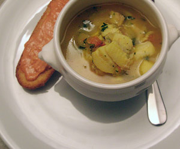

Bouillabaisse
5,5 von 6Fische (ca. 200 g pro Person von möglichst vielen verschienden Fischen) putzen, waschen, Gräte entfernen, zu grosse Fischteile in Portionenstücke teilen.
2 Zwiebeln, einen Lauch und einen viertel von einem Fenchel schälen und klein schneiden. 3 Tomaten überbrühen, häuten und quer halbieren. Die Kerne entfernen und das
Fruchtfleisch kleinschneiden. 3 Knoblauchzehen schälen. Peterli waschen und abtropfen lassen.
In einem grossen Topf Zwiebel im Öl anschmoren lassen. Die Fische darübe geben. Die Tomaten dazugeben und den Knoblauch dazupressen und mit dem Fischsud übergiessen.
Peterli, Lorbeer und Safran hinzufügen. Das Ganze salzen, pfeffern und bei starker Hitze etwa 10 Minuten kochen lassen. 10 Minuten weiter kochen lassen. Servieren mit frischer Baguette und einen schönen trockenen Weissen.
